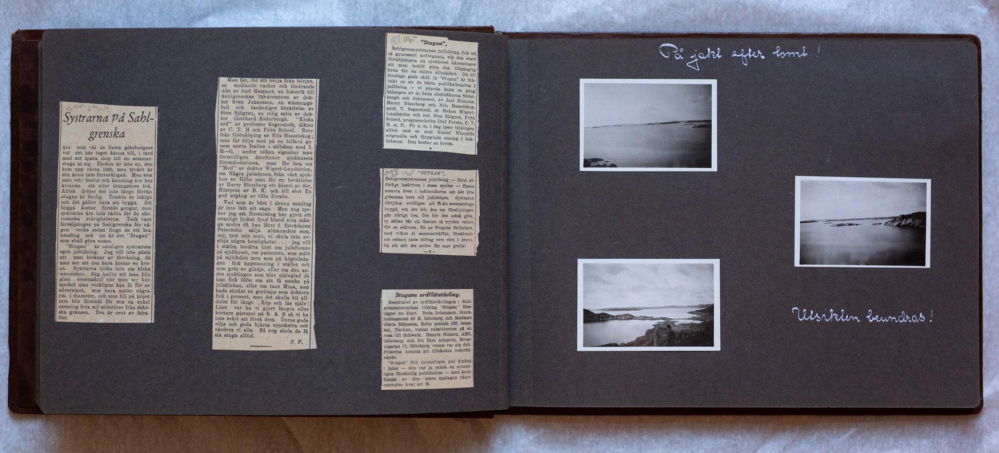

Uppslag 7
{kind=link}


Systrarna på Sahlgrenska äro som de flesta göteborgare vid det här laget känna till, i färd med att spara ihop till en sommarstuga åt sig. Tanken är inte ny, den kom upp våren 1930, men tyvärr är den ännu inte förverkligad. Men som man vet: beslut och handling äro hos kvinnan ett eller åtminstone två. Alltså dröjer det inte länge förrän stugan är färdig. Tomten är inköpt och det gäller bara att bygga. Att bygga kostar förstås pengar, men systrarna äro inte rädda för de ekonimiska svårigheterna. Tack vare försäljningen på Sahlgrenska för någon vecka sedan fick de ett bra handtag och nu är det "Stugan" som skall göra susen. "Stugan" är nämligen systrarnas egen jultidning. Jag vill inte påstå att man bleknar av förvåning, då man ser att den bara kostar en krona. Systrarna tycka inte om bleka människor. Säg hellre att man blir glatt överraskad när man ser hur mycket man verkligen kan få för en silverslant, som bara mäter några cm. i diameter, och som till på köpet inte blir föremål för en enkel notering fyra mil söderöver från skånska gränsen. Det är rent av Fabulöst. Man får för att börja från början, en strålande vacker och tindrande dikt av Jarl Hemmer, en historik till Sahlgrenskas 150 årsminne av doktor Sven Johansson, en stämningsfull och tankediger berättelse av Sten Sjögren, en rolig satir av doktor Gotthard Söderbergh. "Kloka ord" av professor Segerstedt, dikter av C.T.H. och Fritz Scheel. Brev från Grönköping av Nils Hasselskog; man får följa med på en bilfärd genom norra Italien i sällskap med I. H-G, under vilken signatur man förmodligen finner sjukhusets föreståndarinna, man få läsa om "Mod" av doktor Wigert-Lundström, om Några julminnen från vårt sjukhus av Håbe man får en berättelse av Harry Blomberg ett kåseri av Sir, Höstprat av B.K. och till slut En god utgång av Olle Forsén. Vad som är bäst i denna samling är inte lätt att säga. Men nog tycker jag att Hasselskog har gjort ett ovanligt lyckat fynd bland sian många andra då hanlåter f. förrädaren Peterzhon sälja almanackor som, nej tyst min mun, vi skola inte avslöja några hemligheter... jag vill istället berätta litet om julaftonen på sjukhuset, om patienten som stått på mjölkdiet, men som på högtidsdagen fick äggstanning istället och som grät av glädje, eller om den andre sjuklingen som blev själaglad då han fick till löfte om att få smaka på julskinkan, eller om tant Mina, som hade stickat en grytlapp som doktorn fick i present, men det skulle bli alldeles för långt. Köp och läs själv! Litet var ha vi gjort kortare gästspel på S.A.S. så vi ha inte svårt att förstå dem. Deras goda vilja och goda hjärta uppskatta och värdera vi alla. Så nog skola de få sin stuga alltid. S.F.
"Stugan", Sahlgrenssystrarnas jultidning, fick ett så gynnsamt mottagnade vid den stora försäljningen på sjukhuset häromdagen att amn beslöt göra den tillgänglig även för en större allmänhet. Därtill goda skäl, ty "Stugan" är faktiskt en av de bästa publikationerna i julfloden- vi påpeka ännu en gång bidragen av de båda chefsläkarna Söderbergh och Johansson, av Jarl Hemmer, Harry Blomberg och Nils Hasselskog prof. T. Segerstedt, dr Hakon Wigert-Lundström, red. Sten Sjögren, Fritz Schéel, programchefen Olof Forsén, C.T.H. m.fl. F.r.o.m. idag lyser tidningen alltså mot er med Gustaf Wärnlöfs originella och färgglada omslag mot er i boklådorna. Den kostar en krona.
"STUGAN" Sahlgrensystrarnas jultidning- förut utförligen beskriven i dessa spalter- finnes nu även i bokhandlarna och bör inte glömmas bort vid julinköpen. Systrarna förtjäna verkligen att få sin sommarstuga byggd, och det blir den om försäljningen går riktigt bra. Det bör den också göra ty sällan får väl läsaren så mycken valuta för en enkrona. En av Stugans författare med vilken vi har sammanträffat, försäkrade att enbart hans bidrag vore värt 1 krona. Så allt det andra får man gratis.
Stugans ordflätetävling Resultatet av ordflätetävlingen i Sahlgrensystrarnas tidning "Stugan" föreligger nu klart. Beda Johansson Stockholmsgatan 40 B och Madame Gösta Månsson, Bolte postale 620, Istanbul, Turkiet, vunno rabattkoden på en resa till Schweiz. Henrik Nilsson, AEG, Göteborg, och fru Elsa Almgren Berzeliigatan 12, Göteborg, vunno varsin duk. Priserna kommo att tillsändas vederbörande. "Stugan" fick synnerligen god åtgång i julas- den var ju också en synnerligen förnämlig publikation- men ännu finnas av den stora upplagan några exemplar kvar att få.